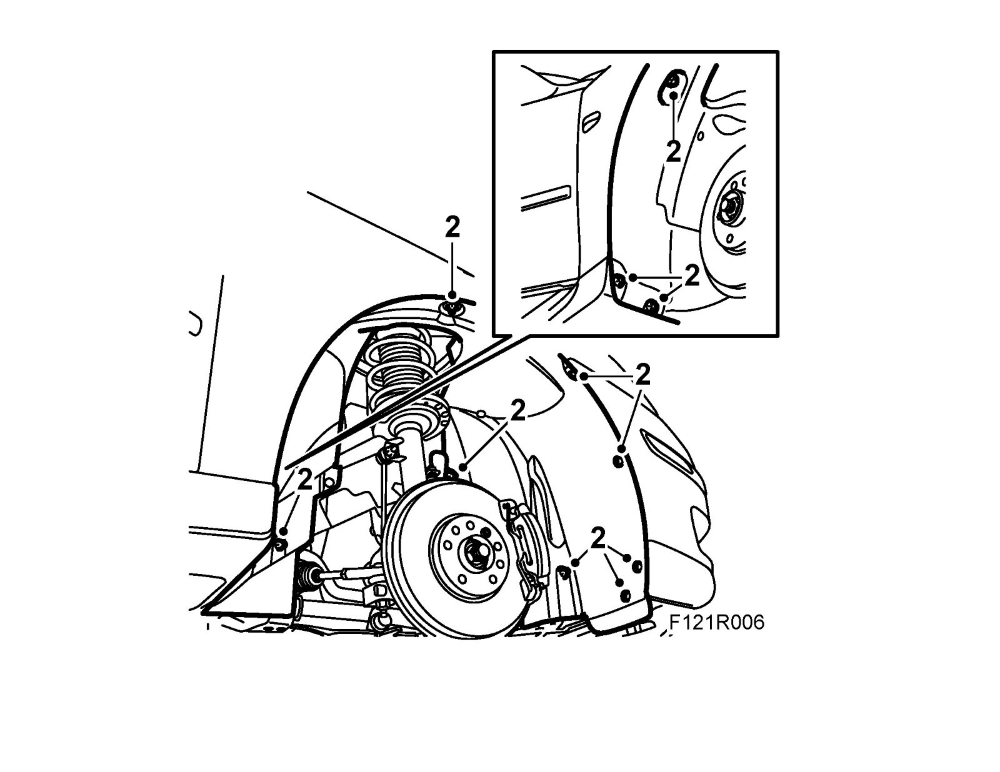
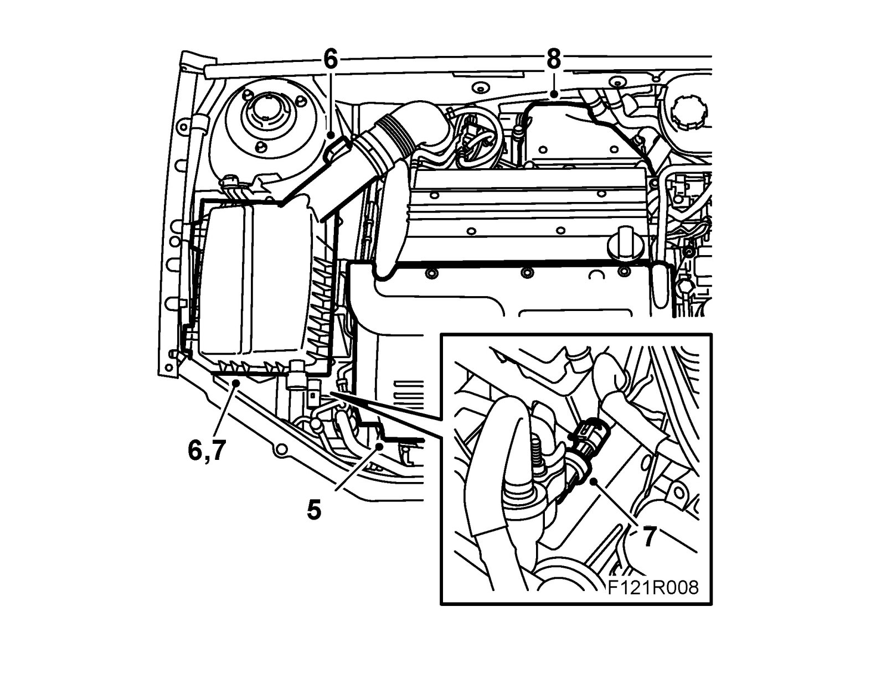
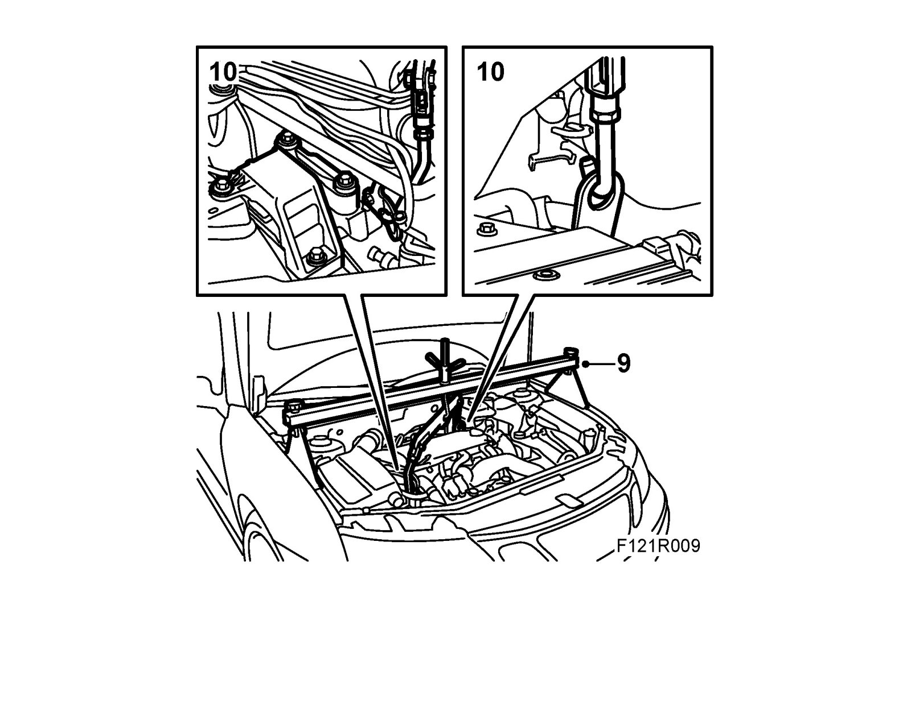
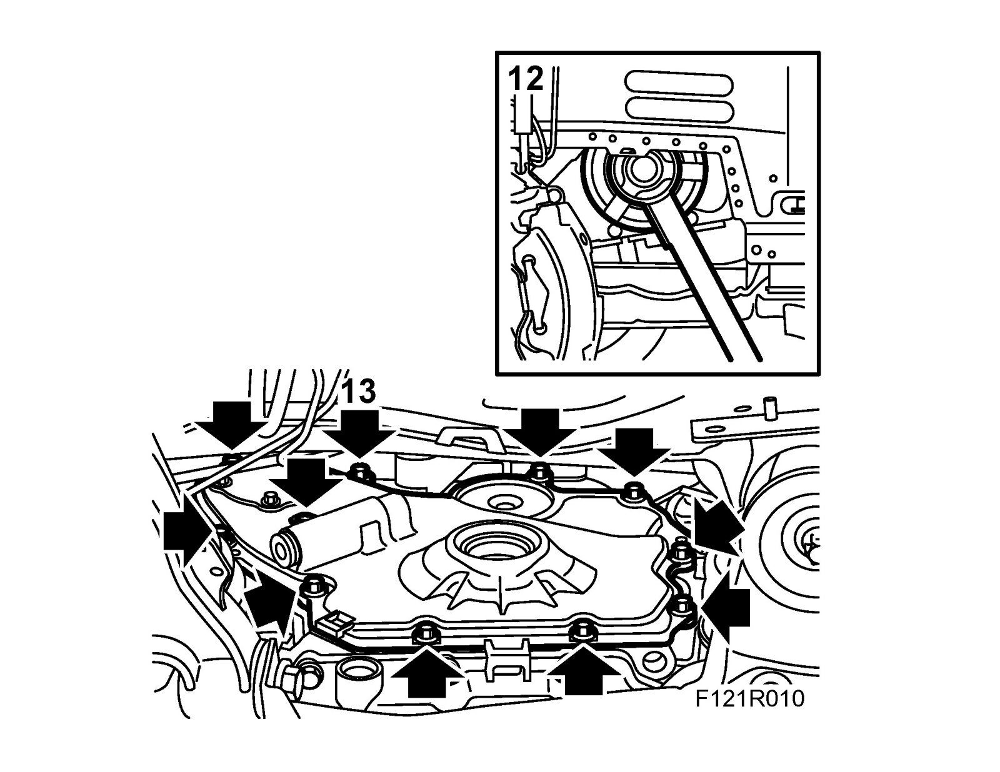
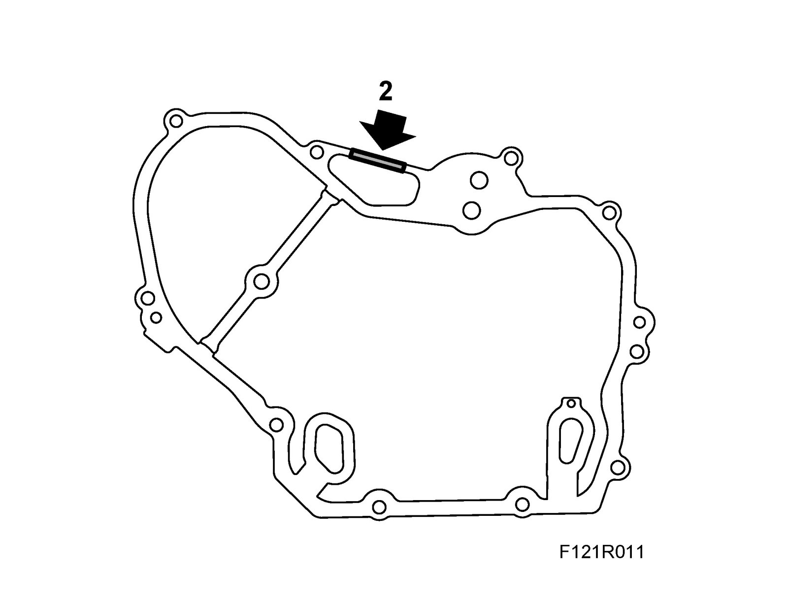
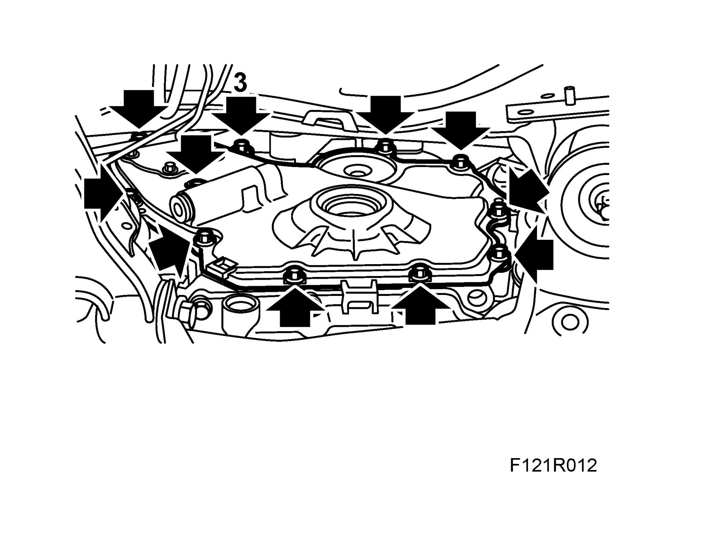
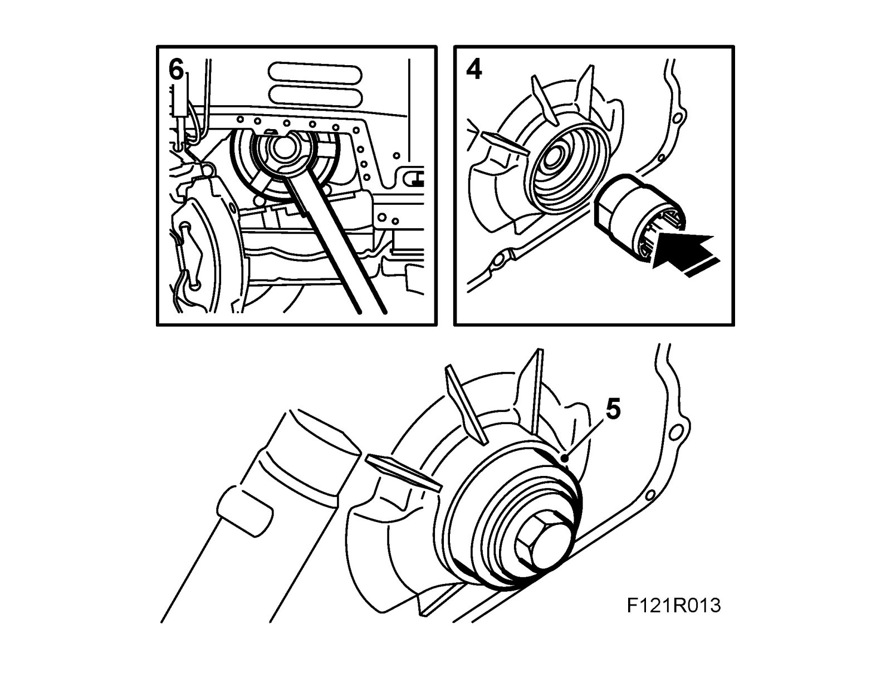
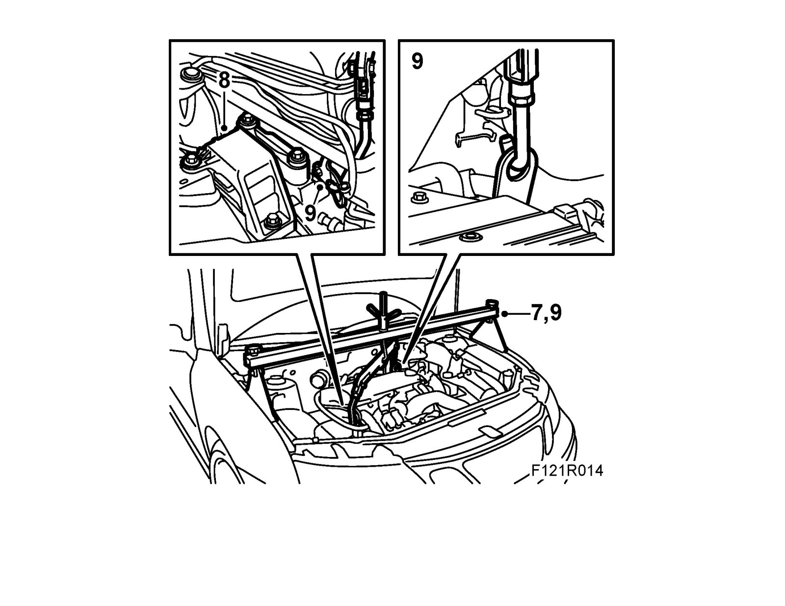
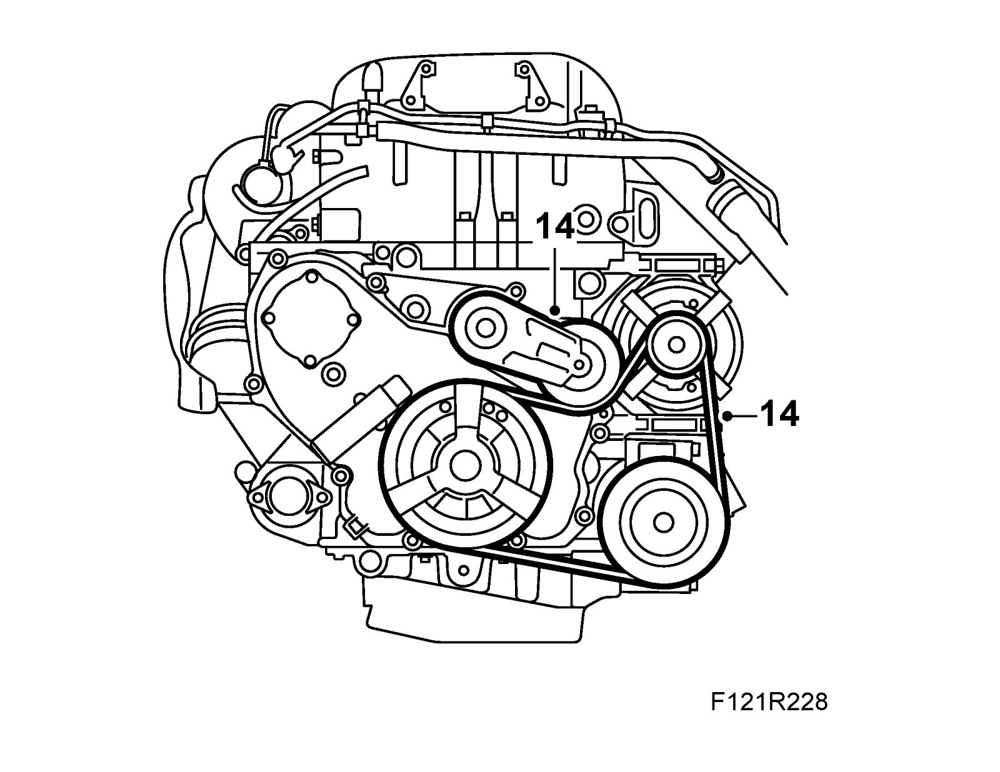
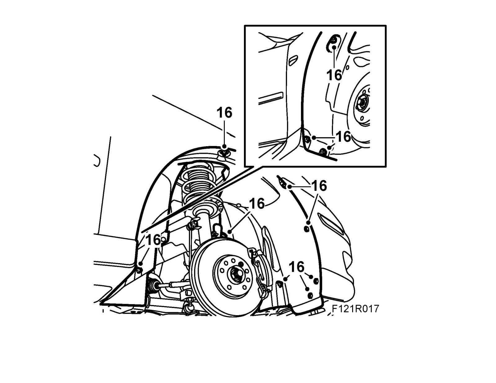

Timing Cover: Service and Repair
Timing cover, B207To remove
1. Raise the car and remove the front right wheel.
2. Remove the right wing liner. CV: Remove Chassis reinforcement, front subframe, CV.

3. Relieve the belt tensioner with 83 96 095 Relieving tool, belt circuit B207 and remove the belt. Mark the direction of rotation on the belt.
4. Remove the belt tensioner.
5. Lower the car and remove the upper engine cover.

6. Detach the mass air flow sensor connector and the intake hose from the air cleaner casing cover. Remove the cover and the air filter.
7. Detach the intake hose and remove the air cleaner casing. Detach the connector for the A/C pressure sensor.
8. Remove the turbocharger heat shield.
9. Fit 83 96 178 Lifting eyes, kit, B207.

10. Fit 83 94 850 Lifting beam and 83 95 287 Holder. Take the weight off the engine and remove the bolts in the engine bracket.
11. Lower the engine about 3 cm using the lifting beam.
12. Raise the car and remove the crankshaft pulley using 83 95 360 Holding tool, crankshaft pulley (shaft only) and 83 96 210 Holding tool, crankshaft pulley, B207

13. Place a receptacle under the car to collect any oil and carefully remove the timing cover.
14. Cut off the part of the timing cover gasket that goes round the engine mounting and remove the gasket.
15. Remove the crankshaft seal.
To fit
1. Clean all the sealing surfaces.
2. Cut off the part of the gasket that is round the engine mounting and position the new timing cover gasket.

3. Fit the timing cover.
Tightening torque 20 Nm (15 lbf ft)

4. Position the 83 96 202 Fitting tools, front crankshaft seal B207 protective collar on the crankshaft. Lubricate the new sealing ring with non-acidic Vaseline and position it on the fitting tool.

5. Position the fitting tool on the crankshaft. Tighten the sealing ring using the crankshaft pulley bolt until it is flush with the timing cover. Remove the tool.
6. Fit the crankshaft pulley with a new bolt. Use 83 95 360 Holding tool, crankshaft pulley (shaft only) and 83 96 210 Holding tool, crankshaft pulley, B207.
Tightening torque 100 Nm + 75° (74 lbf ft + 75°)

7. Lower the car and raise the engine with the lifting beam until it rests against the engine mounting.
8. Fit the bolts to the engine bracket. Remove 83 94 850 Lifting beam with holder.
Tightening torque 70 Nm + 60° (52 lbf ft + 60°)
9. Remove83 96 178 Lifting eye kit B207.
10. Fit the turbocharger heat shield.
11. Fit the air cleaner casing and connect the intake hose. Plug in the connector for the A/C pressure sensor.
12. Fit the air filter and air cleaner casing cover. Connect the intake hose and the mass air flow sensor connector.
13. Fit the upper engine cover.
14. Raise the car and fit the belt tensioner.
Tightening torque 50 Nm (37 lbf ft)

15. Relieve the belt tensioner with 83 96 095 Relieving tool, belt circuit B207 and fit the belt in the marked direction of rotation. Check that the belt is positioned correctly over all the pulleys. CV: Fit Chassis reinforcement, front subframe, CV.
16. Lower the car slightly and fit the right wing liner.

17. Fit the front right wheel. See Wheels.
18. Lower the car completely.
19. Check engine oil level. Top up as necessary.